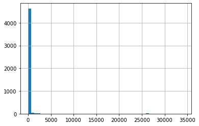
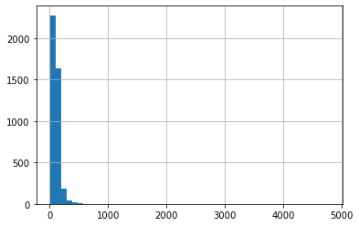

An exploration of Christian song over 30 years period using Spotify and Genius lyrics
This python notebook is used to collect necessary data about
Christian Music, before we do exploration using Tableau.
In general, what this notebook does:
1. Import libraries and setup necessary API
2. Collect songs from Spotify
3. Get song lyrics from GeniusLyrics
4. Analyse lyrics using nltk and sklearn
5. Prepare data for Tableau
# Spotipy for Spotify API
import spotipy
import spotipy.util as util
from spotipy.oauth2 import SpotifyClientCredentials
# lyricsgenius for Genius API
import lyricsgenius as lg
# Other common libraries
import pandas as pd
import numpy as np
import pickleNext, we will need to provide Spotify and Genius API key. Refer to this Spotify API guide and Genius guide to get your API key.
# Setup Spotify API id and secret
client_id = 'insert_id_here'
client_secret = 'insert_secret_here'
spotify = spotipy.Spotify(client_credentials_manager=SpotifyClientCredentials(client_id=client_id,
client_secret=client_secret))# Setup Genius API secret
genius_token = 'insert_token_here'
genius = lg.Genius(genius_token, timeout=20, retries=5)First, we will collect the songs information based on Christian genre.
# test Spotipy to retrieve Christian music genre
result = spotify.search('genre:Christian', limit=1, type='track')
print(result['tracks']){'href': 'https://api.spotify.com/v1/search?query=genre%3AChristian&type=track&offset=0&limit=1',
'items': [{'album': {'album_type': 'album', 'artists': [{'external_urls': {'spotify': 'https://open.spotify.com/artist/49bzE5vRBRIota4qeHtQM8'},
'href': 'https://api.spotify.com/v1/artists/49bzE5vRBRIota4qeHtQM8', 'id': '49bzE5vRBRIota4qeHtQM8', 'name': 'Skillet', 'type': 'artist',
'uri': 'spotify:artist:49bzE5vRBRIota4qeHtQM8'}], 'available_markets': ['AD', 'AE', 'AG', 'AL', 'AM', 'AO', 'AR', 'AU', 'AZ', 'BA', 'BB', 'BD', 'BE', 'BF', 'BG', 'BH', 'BI', 'BJ', 'BN', 'BO', 'BR', 'BS', 'BT', 'BW', 'BY', 'BZ', 'CA', 'CD', 'CG', 'CI', 'CL', 'CM', 'CO', 'CR', 'CV', 'CW', 'CY', 'CZ', 'DJ', 'DK', 'DM', 'DO', 'DZ', 'EC', 'EE', 'EG', 'ES', 'FI', 'FJ', 'FM', 'FR', 'GA', 'GB', 'GD', 'GE', 'GH', 'GM', 'GN', 'GQ', 'GR', 'GT', 'GW', 'GY', 'HK', 'HN', 'HR', 'HT', 'HU', 'ID', 'IE', 'IL', 'IN', 'IQ', 'IS', 'IT', 'JM', 'JO', 'JP', 'KE', 'KG', 'KH', 'KI', 'KM', 'KN', 'KR', 'KW', 'KZ', 'LA', 'LB', 'LC', 'LI', 'LK', 'LR', 'LS', 'LT', 'LU', 'LV', 'LY', 'MA', 'MC', 'MD', 'ME', 'MG', 'MH', 'MK', 'ML', 'MN', 'MO', 'MR', 'MT', 'MU', 'MV', 'MW', 'MX', 'MY', 'MZ', 'NA', 'NE', 'NG', 'NI', 'NL', 'NO', 'NP', 'NR', 'NZ', 'OM', 'PA', 'PE', 'PG', 'PH', 'PK', 'PL', 'PS', 'PT', 'PW', 'PY', 'QA', 'RO', 'RS', 'RW', 'SA', 'SB', 'SC', 'SE', 'SI', 'SK', 'SL', 'SM', 'SN', 'SR', 'ST', 'SV', 'SZ', 'TD', 'TG', 'TH', 'TJ', 'TL', 'TN', 'TO', 'TR', 'TT', 'TV', 'TW', 'TZ', 'UA', 'UG', 'US', 'UY', 'UZ', 'VC', 'VE', 'VN', 'VU', 'WS', 'XK', 'ZA', 'ZM', 'ZW'],
'external_urls': {'spotify': 'https://open.spotify.com/album/0RySAmM6oDPGSE03X3dzi1'}, 'href': 'https://api.spotify.com/v1/albums/0RySAmM6oDPGSE03X3dzi1', 'id': '0RySAmM6oDPGSE03X3dzi1', 'images': [{'height': 640,
'url': 'https://i.scdn.co/image/ab67616d0000b27343e531d5f69170aba281ef43', 'width': 640}, {'height': 300, 'url': 'https://i.scdn.co/image/ab67616d00001e0243e531d5f69170aba281ef43', 'width': 300}, {'height': 64, 'url': 'https://i.scdn.co/image/ab67616d0000485143e531d5f69170aba281ef43', 'width': 64}], 'name': 'Awake', 'release_date': '2009-08-21', 'release_date_precision': 'day', 'total_tracks': 12, 'type': 'album',
'uri': 'spotify:album:0RySAmM6oDPGSE03X3dzi1'}, 'artists': [{'external_urls': {'spotify': 'https://open.spotify.com/artist/49bzE5vRBRIota4qeHtQM8'}, 'href': 'https://api.spotify.com/v1/artists/49bzE5vRBRIota4qeHtQM8',
'id': '49bzE5vRBRIota4qeHtQM8', 'name': 'Skillet', 'type': 'artist', 'uri': 'spotify:artist:49bzE5vRBRIota4qeHtQM8'}], 'available_markets': ['AD', 'AE', 'AG', 'AL', 'AM', 'AO', 'AR', 'AU', 'AZ', 'BA', 'BB', 'BD', 'BE', 'BF', 'BG', 'BH', 'BI', 'BJ', 'BN', 'BO', 'BR', 'BS', 'BT', 'BW', 'BY', 'BZ', 'CA', 'CD', 'CG', 'CI', 'CL', 'CM', 'CO', 'CR', 'CV', 'CW', 'CY', 'CZ', 'DJ', 'DK', 'DM', 'DO', 'DZ', 'EC', 'EE', 'EG', 'ES', 'FI', 'FJ', 'FM', 'FR', 'GA', 'GB', 'GD', 'GE', 'GH', 'GM', 'GN', 'GQ', 'GR', 'GT', 'GW', 'GY', 'HK', 'HN', 'HR', 'HT', 'HU', 'ID', 'IE', 'IL', 'IN', 'IQ', 'IS', 'IT', 'JM', 'JO', 'JP', 'KE', 'KG', 'KH', 'KI', 'KM', 'KN', 'KR', 'KW', 'KZ', 'LA', 'LB', 'LC', 'LI', 'LK', 'LR', 'LS', 'LT', 'LU', 'LV', 'LY', 'MA', 'MC', 'MD', 'ME', 'MG', 'MH', 'MK', 'ML', 'MN', 'MO', 'MR', 'MT', 'MU', 'MV', 'MW', 'MX', 'MY', 'MZ', 'NA', 'NE', 'NG', 'NI', 'NL', 'NO', 'NP', 'NR', 'NZ', 'OM', 'PA', 'PE', 'PG', 'PH', 'PK', 'PL', 'PS', 'PT', 'PW', 'PY', 'QA', 'RO', 'RS', 'RW', 'SA', 'SB', 'SC', 'SE', 'SI', 'SK', 'SL', 'SM', 'SN', 'SR', 'ST', 'SV', 'SZ', 'TD', 'TG', 'TH', 'TJ', 'TL', 'TN', 'TO', 'TR', 'TT', 'TV', 'TW', 'TZ', 'UA', 'UG', 'US', 'UY', 'UZ', 'VC', 'VE', 'VN', 'VU', 'WS', 'XK', 'ZA', 'ZM', 'ZW'], 'disc_number': 1, 'duration_ms': 178013, 'explicit': False,
'external_ids': {'isrc': 'USAT20901851'}, 'external_urls': {'spotify': 'https://open.spotify.com/track/2UREu1Y8CO4jXkbvqAtP7g'}, 'href': 'https://api.spotify.com/v1/tracks/2UREu1Y8CO4jXkbvqAtP7g', 'id': '2UREu1Y8CO4jXkbvqAtP7g', 'is_local': False, 'name': 'Monster',
'popularity': 78, 'preview_url': 'https://p.scdn.co/mp3-preview/7b31bef137993a2f2a1389e333cfb70df4aefb0d?cid=7ff96ed29e48468ca89c5e2dd2903b21', 'track_number': 2, 'type': 'track', 'uri': 'spotify:track:2UREu1Y8CO4jXkbvqAtP7g'}], 'limit': 1,
'next': 'https://api.spotify.com/v1/search?query=genre%3AChristian&type=track&offset=1&limit=1', 'offset': 0, 'previous': None, 'total': 10000}Now we know the API works, let’s get Christian music tracks from 1990-2021.
# collect more tracks from year 1990 - 2021
ls_year = list(range(1990,2022))
result_year = {}
for y in ls_year:
print('collecting songs from ' + str(y))
query = 'genre:"christian music"+year:'+str(y)
result = spotify.search(query, limit=50, type='track')
ls_tracks = result['tracks']['items']
while result['tracks']['next'] and len(ls_tracks)<1000: # Spotify API limits up to 1000 songs
try:
result = spotify.next(result['tracks'])
ls_tracks.extend(result['tracks']['items'])
except:
# break while loop if there is no more song to be retrieved
break
result_year[y] = ls_trackscollecting songs from 1990
collecting songs from 1991
collecting songs from 1992
collecting songs from 1993
collecting songs from 1994
collecting songs from 1995
collecting songs from 1996
collecting songs from 1997
collecting songs from 1998
collecting songs from 1999
collecting songs from 2000
collecting songs from 2001
collecting songs from 2002
collecting songs from 2003
collecting songs from 2004
collecting songs from 2005
collecting songs from 2006
collecting songs from 2007
collecting songs from 2008
collecting songs from 2009
collecting songs from 2010
collecting songs from 2011
collecting songs from 2012
collecting songs from 2013
collecting songs from 2014
collecting songs from 2015
collecting songs from 2016
collecting songs from 2017
collecting songs from 2018
collecting songs from 2019
collecting songs from 2020
collecting songs from 2021We will store them as Pandas dataframe for further manipulation.
# convert result to Pandas dataframe for manipulation
df1 = pd.DataFrame()
for k in result_year.keys():
df_temp = pd.DataFrame(result_year[k])
df1 = pd.concat([df1, df_temp],ignore_index=True)
df1.head()| album | artists | available_markets | disc_number | duration_ms | explicit | external_ids | external_urls | href | id | is_local | name | popularity | preview_url | track_number | type | uri | |
|---|---|---|---|---|---|---|---|---|---|---|---|---|---|---|---|---|---|
| 0 | {‘album_type’: ‘album’, ‘artists’: [{’external… | [{‘external_urls’: {‘spotify’: ’https://open.s… | [AD, AE, AG, AL, AM, AO, AR, AT, AU, AZ, BA, B… | 1 | 280866 | False | {‘isrc’: ‘USCM19311591’} | {‘spotify’: ’https://open.spotify.com/track/1e… | https://api.spotify.com/v1/tracks/1egPCejtdWP3… | 1egPCejtdWP3KRNwGNxbtZ | False | How Beautiful | 52 | None | 6 | track | spotify:track:1egPCejtdWP3KRNwGNxbtZ |
| 1 | {‘album_type’: ‘album’, ‘artists’: [{’external… | [{‘external_urls’: {‘spotify’: ’https://open.s… | [AD, AE, AG, AL, AM, AO, AR, AT, AU, AZ, BA, B… | 1 | 240173 | False | {‘isrc’: ‘USRR49000003’} | {‘spotify’: ’https://open.spotify.com/track/0P… | https://api.spotify.com/v1/tracks/0PKTBeN87JYJ… | 0PKTBeN87JYJ1mRzrq5Aog | False | Place In This World | 47 | https://p.scdn.co/mp3-preview/1bd0020320eed3b0… | 3 | track | spotify:track:0PKTBeN87JYJ1mRzrq5Aog |
| 2 | {‘album_type’: ‘album’, ‘artists’: [{’external… | [{‘external_urls’: {‘spotify’: ’https://open.s… | [AD, AE, AG, AL, AM, AO, AR, AT, AZ, BA, BB, B… | 1 | 297666 | False | {‘isrc’: ‘USBE19000006’} | {‘spotify’: ’https://open.spotify.com/track/6z… | https://api.spotify.com/v1/tracks/6zTrDHttc6yX… | 6zTrDHttc6yXR5Wc9n816G | False | Where There Is Faith | 33 | https://p.scdn.co/mp3-preview/c2f2189f9e559c02… | 6 | track | spotify:track:6zTrDHttc6yXR5Wc9n816G |
| 3 | {‘album_type’: ‘album’, ‘artists’: [{’external… | [{‘external_urls’: {‘spotify’: ’https://open.s… | [AD, AE, AG, AL, AM, AO, AR, AT, AU, AZ, BA, B… | 1 | 327800 | False | {‘isrc’: ‘USWR60100020’} | {‘spotify’: ’https://open.spotify.com/track/3g… | https://api.spotify.com/v1/tracks/3gVhqz1WJ3TS… | 3gVhqz1WJ3TSr4ildgU0KD | False | Another Time, Another Place | 35 | https://p.scdn.co/mp3-preview/6b688e7cde4c07d2… | 2 | track | spotify:track:3gVhqz1WJ3TSr4ildgU0KD |
| 4 | {‘album_type’: ‘album’, ‘artists’: [{’external… | [{‘external_urls’: {‘spotify’: ’https://open.s… | [AD, AE, AG, AL, AM, AO, AR, AT, AU, AZ, BA, B… | 1 | 284466 | False | {‘isrc’: ‘USWR60251849’} | {‘spotify’: ’https://open.spotify.com/track/4e… | https://api.spotify.com/v1/tracks/4eBAni9FeqKv… | 4eBAni9FeqKv9JQqwOF4VM | False | Home Free | 32 | https://p.scdn.co/mp3-preview/7312bcd0ffcd2a7e… | 4 | track | spotify:track:4eBAni9FeqKv9JQqwOF4VM |
Get relevant information for each tracks such as release date/year, artist, and track name.
# extract relevant information about songs
df1['release_date'] = df1.apply(lambda x: x['album']['release_date'], axis=1)
df1['artists_name'] = df1.apply(lambda x: x['album']['artists'][0]['name'], axis=1)
df1['track_name'] = df1.apply(lambda x: x['album']['name'], axis=1)
df1['release_year'] = df1.apply(lambda x: x['release_date'][:4], axis=1)
df1.head()| album | artists | available_markets | disc_number | duration_ms | explicit | external_ids | external_urls | href | id | … | name | popularity | preview_url | track_number | type | uri | release_date | artists_name | track_name | release_year | |
|---|---|---|---|---|---|---|---|---|---|---|---|---|---|---|---|---|---|---|---|---|---|
| 0 | {‘album_type’: ‘album’, ‘artists’: [{’external… | [{‘external_urls’: {‘spotify’: ’https://open.s… | [AD, AE, AG, AL, AM, AO, AR, AT, AU, AZ, BA, B… | 1 | 280866 | False | {‘isrc’: ‘USCM19311591’} | {‘spotify’: ’https://open.spotify.com/track/1e… | https://api.spotify.com/v1/tracks/1egPCejtdWP3… | 1egPCejtdWP3KRNwGNxbtZ | … | How Beautiful | 52 | None | 6 | track | spotify:track:1egPCejtdWP3KRNwGNxbtZ | 1990-01-01 | Twila Paris | Cry For The Desert | 1990 |
| 1 | {‘album_type’: ‘album’, ‘artists’: [{’external… | [{‘external_urls’: {‘spotify’: ’https://open.s… | [AD, AE, AG, AL, AM, AO, AR, AT, AU, AZ, BA, B… | 1 | 240173 | False | {‘isrc’: ‘USRR49000003’} | {‘spotify’: ’https://open.spotify.com/track/0P… | https://api.spotify.com/v1/tracks/0PKTBeN87JYJ… | 0PKTBeN87JYJ1mRzrq5Aog | … | Place In This World | 47 | https://p.scdn.co/mp3-preview/1bd0020320eed3b0… | 3 | track | spotify:track:0PKTBeN87JYJ1mRzrq5Aog | 1990 | Michael W. Smith | Go West Young Man | 1990 |
| 2 | {‘album_type’: ‘album’, ‘artists’: [{’external… | [{‘external_urls’: {‘spotify’: ’https://open.s… | [AD, AE, AG, AL, AM, AO, AR, AT, AZ, BA, BB, B… | 1 | 297666 | False | {‘isrc’: ‘USBE19000006’} | {‘spotify’: ’https://open.spotify.com/track/6z… | https://api.spotify.com/v1/tracks/6zTrDHttc6yX… | 6zTrDHttc6yXR5Wc9n816G | … | Where There Is Faith | 33 | https://p.scdn.co/mp3-preview/c2f2189f9e559c02… | 6 | track | spotify:track:6zTrDHttc6yXR5Wc9n816G | 1990 | 4Him | 4Him | 1990 |
| 3 | {‘album_type’: ‘album’, ‘artists’: [{’external… | [{‘external_urls’: {‘spotify’: ’https://open.s… | [AD, AE, AG, AL, AM, AO, AR, AT, AU, AZ, BA, B… | 1 | 327800 | False | {‘isrc’: ‘USWR60100020’} | {‘spotify’: ’https://open.spotify.com/track/3g… | https://api.spotify.com/v1/tracks/3gVhqz1WJ3TS… | 3gVhqz1WJ3TSr4ildgU0KD | … | Another Time, Another Place | 35 | https://p.scdn.co/mp3-preview/6b688e7cde4c07d2… | 2 | track | spotify:track:3gVhqz1WJ3TSr4ildgU0KD | 1990-10-01 | Sandi Patty | Another Time…Another Place | 1990 |
| 4 | {‘album_type’: ‘album’, ‘artists’: [{’external… | [{‘external_urls’: {‘spotify’: ’https://open.s… | [AD, AE, AG, AL, AM, AO, AR, AT, AU, AZ, BA, B… | 1 | 284466 | False | {‘isrc’: ‘USWR60251849’} | {‘spotify’: ’https://open.spotify.com/track/4e… | https://api.spotify.com/v1/tracks/4eBAni9FeqKv… | 4eBAni9FeqKv9JQqwOF4VM | … | Home Free | 32 | https://p.scdn.co/mp3-preview/7312bcd0ffcd2a7e… | 4 | track | spotify:track:4eBAni9FeqKv9JQqwOF4VM | 1990-01-01 | Wayne Watson | Home Free | 1990 |
5 rows × 21 columns
We want to see if we manage to get at least 100 tracks for each year.
# check how many songs succesfully retrieved for each year (at least there are 100 songs for each eyar)
df1.groupby(by=['release_year']).agg({'release_year': 'count'})| release_year | |
|---|---|
| release_year | |
| 1990 | 239 |
| 1991 | 170 |
| 1992 | 291 |
| 1993 | 316 |
| 1994 | 291 |
| 1995 | 468 |
| 1996 | 339 |
| 1997 | 481 |
| 1998 | 490 |
| 1999 | 796 |
| 2000 | 706 |
| 2001 | 1000 |
| 2002 | 1000 |
| 2003 | 1000 |
| 2004 | 984 |
| 2005 | 1000 |
| 2006 | 1000 |
| 2007 | 1000 |
| 2008 | 1000 |
| 2009 | 1000 |
| 2010 | 1000 |
| 2011 | 1000 |
| 2012 | 1000 |
| 2013 | 1000 |
| 2014 | 1000 |
| 2015 | 1000 |
| 2016 | 1000 |
| 2017 | 1000 |
| 2018 | 1000 |
| 2019 | 1000 |
| 2020 | 1000 |
| 2021 | 1000 |
Next, we want to get the track features for each song tracks.
Notes about track features:
Acousticness - A confidence measure from 0.0 to 1.0 of whether the track
is acoustic. 1.0 represents high confidence the track is acoustic.
Danceability - Describes how suitable a track is for dancing based on a combination of musical elements including tempo, rhythm stability, beat strength, and overall regularity. A value of 0.0 is least danceable and 1.0 is most danceable.
Energy - A measure from 0.0 to 1.0 and represents a perceptual measure of intensity and activity. Typically, energetic tracks feel fast, loud, and noisy. For example, death metal has high energy, while a Bach prelude scores low on the scale. Perceptual features contributing to this attribute include dynamic range, perceived loudness, timbre, onset rate, and general entropy.
Instrumentalness - Predicts whether a track contains no vocals. “Ooh” and “aah” sounds are treated as instrumental in this context. Rap or spoken word tracks are clearly “vocal”. The closer the instrumentalness value is to 1.0, the greater likelihood the track contains no vocal content. Values above 0.5 are intended to represent instrumental tracks, but confidence is higher as the value approaches 1.0.
Liveness - Detects the presence of an audience in the recording. Higher liveness values represent an increased probability that the track was performed live. A value above 0.8 provides strong likelihood that the track is live.
Loudness - The overall loudness of a track in decibels (dB). Loudness values are averaged across the entire track and are useful for comparing relative loudness of tracks. Loudness is the quality of a sound that is the primary psychological correlate of physical strength (amplitude). Values typically range between -60 and 0 db.
Speechiness - Detects the presence of spoken words in a track. The more exclusively speech-like the recording (e.g. talk show, audio book, poetry), the closer to 1.0 the attribute value. Values above 0.66 describe tracks that are probably made entirely of spoken words. Values between 0.33 and 0.66 describe tracks that may contain both music and speech, either in sections or layered, including such cases as rap music. Values below 0.33 most likely represent music and other non-speech-like tracks.
Tempo - The overall estimated tempo of a track in beats per minute (BPM). In musical terminology, tempo is the speed or pace of a given piece and derives directly from the average beat duration.
Valence - A measure from 0.0 to 1.0 describing the musical positiveness conveyed by a track. Tracks with high valence sound more positive (e.g. happy, cheerful, euphoric), while tracks with low valence sound more negative (e.g. sad, depressed, angry).
Popularity - The popularity of the track. The value will be between 0 and 100, with 100 being the most popular. The popularity of a track is a value between 0 and 100, with 100 being the most popular. The popularity is calculated by algorithm and is based, in the most part, on the total number of plays the track has had and how recent those plays are. Generally speaking, songs that are being played a lot now will have a higher popularity than songs that were played a lot in the past. Duplicate tracks (e.g. the same track from a single and an album) are rated independently. Artist and album popularity is derived mathematically from track popularity.
# get audio track features (max 100 ids per request)
i=0
while i < len(df1):
if i+99 < len(df1):
df1.loc[i:i+99,'track_features'] = spotify.audio_features(tracks=df1.loc[i:i+99,'id'].to_list())
else:
df1.loc[i:,'track_features'] = spotify.audio_features(tracks=df1.loc[i:,'id'].to_list())
i+=100
df1.head()| album | artists | available_markets | disc_number | duration_ms | explicit | external_ids | external_urls | href | id | … | popularity | preview_url | track_number | type | uri | release_date | artists_name | track_name | release_year | track_features | |
|---|---|---|---|---|---|---|---|---|---|---|---|---|---|---|---|---|---|---|---|---|---|
| 0 | {‘album_type’: ‘album’, ‘artists’: [{’external… | [{‘external_urls’: {‘spotify’: ’https://open.s… | [AD, AE, AG, AL, AM, AO, AR, AT, AU, AZ, BA, B… | 1 | 280866 | False | {‘isrc’: ‘USCM19311591’} | {‘spotify’: ’https://open.spotify.com/track/1e… | https://api.spotify.com/v1/tracks/1egPCejtdWP3… | 1egPCejtdWP3KRNwGNxbtZ | … | 52 | None | 6 | track | spotify:track:1egPCejtdWP3KRNwGNxbtZ | 1990-01-01 | Twila Paris | Cry For The Desert | 1990 | {‘danceability’: 0.296, ‘energy’: 0.284, ‘key’… |
| 1 | {‘album_type’: ‘album’, ‘artists’: [{’external… | [{‘external_urls’: {‘spotify’: ’https://open.s… | [AD, AE, AG, AL, AM, AO, AR, AT, AU, AZ, BA, B… | 1 | 240173 | False | {‘isrc’: ‘USRR49000003’} | {‘spotify’: ’https://open.spotify.com/track/0P… | https://api.spotify.com/v1/tracks/0PKTBeN87JYJ… | 0PKTBeN87JYJ1mRzrq5Aog | … | 47 | https://p.scdn.co/mp3-preview/1bd0020320eed3b0… | 3 | track | spotify:track:0PKTBeN87JYJ1mRzrq5Aog | 1990 | Michael W. Smith | Go West Young Man | 1990 | {‘danceability’: 0.446, ‘energy’: 0.559, ‘key’… |
| 2 | {‘album_type’: ‘album’, ‘artists’: [{’external… | [{‘external_urls’: {‘spotify’: ’https://open.s… | [AD, AE, AG, AL, AM, AO, AR, AT, AZ, BA, BB, B… | 1 | 297666 | False | {‘isrc’: ‘USBE19000006’} | {‘spotify’: ’https://open.spotify.com/track/6z… | https://api.spotify.com/v1/tracks/6zTrDHttc6yX… | 6zTrDHttc6yXR5Wc9n816G | … | 33 | https://p.scdn.co/mp3-preview/c2f2189f9e559c02… | 6 | track | spotify:track:6zTrDHttc6yXR5Wc9n816G | 1990 | 4Him | 4Him | 1990 | {‘danceability’: 0.542, ‘energy’: 0.582, ‘key’… |
| 3 | {‘album_type’: ‘album’, ‘artists’: [{’external… | [{‘external_urls’: {‘spotify’: ’https://open.s… | [AD, AE, AG, AL, AM, AO, AR, AT, AU, AZ, BA, B… | 1 | 327800 | False | {‘isrc’: ‘USWR60100020’} | {‘spotify’: ’https://open.spotify.com/track/3g… | https://api.spotify.com/v1/tracks/3gVhqz1WJ3TS… | 3gVhqz1WJ3TSr4ildgU0KD | … | 35 | https://p.scdn.co/mp3-preview/6b688e7cde4c07d2… | 2 | track | spotify:track:3gVhqz1WJ3TSr4ildgU0KD | 1990-10-01 | Sandi Patty | Another Time…Another Place | 1990 | {‘danceability’: 0.377, ‘energy’: 0.537, ‘key’… |
| 4 | {‘album_type’: ‘album’, ‘artists’: [{’external… | [{‘external_urls’: {‘spotify’: ’https://open.s… | [AD, AE, AG, AL, AM, AO, AR, AT, AU, AZ, BA, B… | 1 | 284466 | False | {‘isrc’: ‘USWR60251849’} | {‘spotify’: ’https://open.spotify.com/track/4e… | https://api.spotify.com/v1/tracks/4eBAni9FeqKv… | 4eBAni9FeqKv9JQqwOF4VM | … | 32 | https://p.scdn.co/mp3-preview/7312bcd0ffcd2a7e… | 4 | track | spotify:track:4eBAni9FeqKv9JQqwOF4VM | 1990-01-01 | Wayne Watson | Home Free | 1990 | {‘danceability’: 0.573, ‘energy’: 0.331, ‘key’… |
5 rows × 22 columns
# check dataframe columns
df1.columns.sort_values()Index(['album', 'artists', 'artists_name', 'available_markets', 'disc_number',
'duration_ms', 'explicit', 'external_ids', 'external_urls', 'href',
'id', 'is_local', 'name', 'popularity', 'preview_url', 'release_date',
'release_year', 'track_features', 'track_name', 'track_number', 'type',
'uri'],
dtype='object')# expand features to dataframe columns
feat_cols = ['danceability', 'energy', 'key', 'loudness', 'mode', 'speechiness',
'acousticness', 'instrumentalness', 'liveness', 'valence', 'tempo', 'time_signature']
df2 = pd.concat([df1.drop(['track_features'], axis=1),
df1['track_features'].apply(lambda x: pd.Series(x)[feat_cols])], axis=1)# check data types
df2.info()<class 'pandas.core.frame.DataFrame'>
RangeIndex: 25571 entries, 0 to 25570
Data columns (total 33 columns):
# Column Non-Null Count Dtype
--- ------ -------------- -----
0 album 25571 non-null object
1 artists 25571 non-null object
2 available_markets 25571 non-null object
3 disc_number 25571 non-null int64
4 duration_ms 25571 non-null int64
5 explicit 25571 non-null bool
6 external_ids 25571 non-null object
7 external_urls 25571 non-null object
8 href 25571 non-null object
9 id 25571 non-null object
10 is_local 25571 non-null bool
11 name 25571 non-null object
12 popularity 25571 non-null int64
13 preview_url 14738 non-null object
14 track_number 25571 non-null int64
15 type 25571 non-null object
16 uri 25571 non-null object
17 release_date 25571 non-null object
18 artists_name 25571 non-null object
19 track_name 25571 non-null object
20 release_year 25571 non-null object
21 danceability 25571 non-null float64
22 energy 25571 non-null float64
23 key 25571 non-null int64
24 loudness 25571 non-null float64
25 mode 25571 non-null int64
26 speechiness 25571 non-null float64
27 acousticness 25571 non-null float64
28 instrumentalness 25571 non-null float64
29 liveness 25571 non-null float64
30 valence 25571 non-null float64
31 tempo 25571 non-null float64
32 time_signature 25571 non-null int64
dtypes: bool(2), float64(9), int64(7), object(15)
memory usage: 6.1+ MBWe have extracted a lot of data up to now, let’s save it to pickle file.
# export dataframe to pickle for easy retrieval next time
with open('songs.pickle', 'wb') as f:
pickle.dump(df2, f, pickle.HIGHEST_PROTOCOL)
# for importing the exported pickle files
with open('songs.pickle', 'rb') as f:
df2 = pickle.load(f)Let’s check our data and see if there is any duplicate.
dfg = df2.groupby(by=['name','artists_name']).agg({'id':'count'}).sort_values(by='id', ascending=False)
dfg[dfg['id']>1]| id | ||
|---|---|---|
| name | artists_name | |
| Shout to the Lord | Various Artists | 10 |
| Shine | Newsboys | 10 |
| Mercy Came Running | Phillips, Craig & Dean | 9 |
| Jesus Freak | DC Talk | 8 |
| I Wanna Remember (feat. Carrie Underwood) | NEEDTOBREATHE | 8 |
| … | … | … |
| White Christmas | Amy Grant | 2 |
| Simplicity | Rend Collective | 2 |
| Spirit - Listen Louder Album Version | Various Artists | 2 |
| Never Fail - Live | Hillsong Young & Free | 2 |
| He Shall Reign - Live | Hillsong Worship | 2 |
3229 rows × 1 columns
Before we find the lyrics to each tracks, we want to remove duplicates if track name, artist, and released year are the same.
# drop duplicate if song, artist, released_year are the same
df2.drop_duplicates(['name', 'artists_name', 'release_year'], inplace=True)Let’s test our Genius API.
# test genius API to get song lyrics
title_name = df2.loc[0, 'track_name']
artist_name = df2.loc[0, 'artists_name']
song = genius.search_song(title=title_name, artist=artist_name)
print(song.lyrics)Searching for "Cry For The Desert" by Twila Paris...
Done.
Verse I
I will cry for the desert
When He's bleeding from His heart and soul
Die for the desert
And remove my hands from what I hold
Deeper in my heart I will hear Him call
Deeper in my heart I will give it all
Deeper in my heart
CHORUS
I will cry for the desert
Oh
I will cry for the desert
Oh
I will cry
Verse II
Cry for the desert;
I will tremble and recieve His pain
Die for the desert;
I will pour my life on this terrain
Deeper in my heart I will hear Him call
Deeper in my heart I will give it all
Deeper in my heart
Bridge
The smallest grain of sand
Is held inside my hand
And when I look
I see His face
The smallest grain of sand
Is held inside my hand
And when I look
I see His face
REPEAT VERSE I
REPEAT CHORUSEmbedShare URLCopyEmbedCopydf2.shape(24167, 33)We would be using various libraries below for text analysis.
# import necessary libraries for text analysis
import nltk
import re
from nltk.stem import WordNetLemmatizer
from nltk.tokenize import RegexpTokenizer
from nltk.corpus import stopwords
from nltk.corpus import words
from sklearn.feature_extraction.text import TfidfVectorizer
from sklearn.feature_extraction import text as sktext
from sklearn.cluster import KMeans
import matplotlib.pyplot as plt
from PIL import Image
from wordcloud import WordCloud, STOPWORDS, ImageColorGenerator
%matplotlib inlineWe would not consider medley as it will have longer lyrics than usual. And the lyrics may likely not be retrieved successfully. We will also exclude non-english songs and songs with multiple artists.
# remove medley songs
df3 = df2[df2['name'].apply(lambda x: 'medley' not in x.lower())]
# remove non-english song
setofwords = set(words.words())
df3 = df3[df3['name'].apply(lambda x: any([n in setofwords for n in x]))]
print(df3.shape)
# remove tracks with multiple artists
df3 = df3[df3['artists_name'].apply(lambda x: ('various' not in x.lower()) and (',' not in x.lower()))]
print(df3.shape)(23919, 33)
(22440, 33)We now have around 22k song tracks.
df3.columnsIndex(['album', 'artists', 'available_markets', 'disc_number', 'duration_ms',
'explicit', 'external_ids', 'external_urls', 'href', 'id', 'is_local',
'name', 'popularity', 'preview_url', 'track_number', 'type', 'uri',
'release_date', 'artists_name', 'track_name', 'release_year',
'danceability', 'energy', 'key', 'loudness', 'mode', 'speechiness',
'acousticness', 'instrumentalness', 'liveness', 'valence', 'tempo',
'time_signature'],
dtype='object')We will keep album image URL for display later.
# save image url for display later
df3['image_url'] = df3['album'].apply(lambda x: x['images'][1]['url'])To reduce the number of tracks for analysis, we will just take top 150 songs for each year based on popularity.
# get top 150 songs by popularity for each year
df_top = df3.sort_values('popularity',ascending = False).groupby('release_year')\
['name', 'artists_name', 'image_url', 'release_year', 'duration_ms', 'external_urls', 'popularity', 'danceability', 'energy', 'loudness', 'speechiness',
'acousticness', 'instrumentalness', 'liveness', 'valence', 'tempo', 'key', 'time_signature'].head(150)
df_top.sort_values('release_year').head()C:\Users\nn\Anaconda3\lib\site-packages\ipykernel_launcher.py:3: FutureWarning: Indexing with multiple keys (implicitly converted to a tuple of keys) will be deprecated, use a list instead.
This is separate from the ipykernel package so we can avoid doing imports until| name | artists_name | image_url | release_year | duration_ms | external_urls | popularity | danceability | energy | loudness | speechiness | acousticness | instrumentalness | liveness | valence | tempo | key | time_signature | |
|---|---|---|---|---|---|---|---|---|---|---|---|---|---|---|---|---|---|---|
| 82 | Freedom | Wayne Watson | https://i.scdn.co/image/ab67616d00001e02aea734… | 1990 | 304200 | {‘spotify’: ’https://open.spotify.com/track/0G… | 12 | 0.659 | 0.542 | -10.487 | 0.0289 | 0.0759 | 0.0 | 0.0524 | 0.840 | 114.576 | 2 | 4 |
| 92 | Storyline - Powerhouse Album Version | Whiteheart | https://i.scdn.co/image/ab67616d00001e02f117a6… | 1990 | 261686 | {‘spotify’: ’https://open.spotify.com/track/38… | 13 | 0.701 | 0.701 | -11.453 | 0.0357 | 0.4290 | 0.0 | 0.0520 | 0.485 | 115.926 | 2 | 4 |
| 60 | What Kind Of Joy | Steven Curtis Chapman | https://i.scdn.co/image/ab67616d00001e02c6ae7e… | 1990 | 276466 | {‘spotify’: ’https://open.spotify.com/track/5r… | 13 | 0.528 | 0.496 | -13.614 | 0.0326 | 0.3520 | 0.0 | 0.0912 | 0.578 | 157.727 | 2 | 3 |
| 90 | How Majestic Is Your Name | Sandi Patty | https://i.scdn.co/image/ab67616d00001e0206a08c… | 1990 | 167307 | {‘spotify’: ’https://open.spotify.com/track/5v… | 13 | 0.389 | 0.833 | -9.022 | 0.2500 | 0.5980 | 0.0 | 0.9790 | 0.832 | 175.964 | 2 | 4 |
| 73 | Undivided Heart - Cry For The Desert Album Ver… | Twila Paris | https://i.scdn.co/image/ab67616d00001e02c860b3… | 1990 | 290133 | {‘spotify’: ’https://open.spotify.com/track/3v… | 13 | 0.551 | 0.862 | -4.822 | 0.0472 | 0.3630 | 0.0 | 0.7440 | 0.389 | 105.848 | 7 | 4 |
#remove extra info from song title i.e. '-' and '()'
df_top.rename(columns={'name':'original_name'}, inplace=True)
df_top['name'] = df_top['original_name'].apply(lambda x: x.split('-')[0])
df_top['name'] = df_top['name'].apply(lambda x: x.split('(')[0].strip())Next we create helper function to retrieve the lyrics.
# create helper function to retrieve lyrics
def get_lyrics(title, artist):
while True:
try:
song = genius.search_song(title=title, artist=artist)
if song:
return song.lyrics
else:
return None
break
except:
pass # get the lyrics of the songs
df_top['lyrics'] = df_top.apply(lambda x: get_lyrics(x['name'], x['artists_name']), axis=1)Searching for "Monster" by Skillet...
Done.
Searching for "You Say" by Lauren Daigle...
Done.
Searching for "Feel Invincible" by Skillet...
Done.
Searching for "Hero" by Skillet...
Done.
Searching for "The Resistance" by Skillet...
Done.
Searching for "Reckless Love" by Cory Asbury...
Done.
Searching for "Rescue" by Lauren Daigle...
Done.
Searching for "Awake and Alive" by Skillet...
Done.
Searching for "Comatose" by Skillet...
Done.
Searching for "Oceans" by Hillsong UNITED...
Done.
Searching for "O Come to the Altar" by Elevation Worship...
Done.
Searching for "Nobody" by Casting Crowns...
Done.
Searching for "Not Gonna Die" by Skillet...
Done.
Searching for "Little Drummer Boy" by for KING & COUNTRY...
Done.
Searching for "Good Good Father" by Chris Tomlin...
Done.
Searching for "Way Maker" by Leeland...
Done.
Searching for "Jireh" by Elevation Worship...
Done.
Searching for "10,000 Reasons" by Matt Redman...
Done.
Searching for "Do It Again" by Elevation Worship...
Done.
Searching for "I Can Only Imagine" by MercyMe...
Done.
Searching for "Whispers in the Dark" by Skillet...
Done.
Searching for "What A Beautiful Name" by Hillsong Worship...
Done.
Searching for "Trust in You" by Lauren Daigle...
Done.
Searching for "Tributary" by Twila Paris...
Specified song does not contain lyrics. Rejecting.
Searching for "Everywhere I Look" by Phil Keaggy...
Done.
..........and more..........Again, save the dataframe as pickle file.
# save dataframe with lyrics as pickle for easy retrieval next time
with open('df_top_lyrics.pickle', 'wb') as f:
pickle.dump(df_top, f, pickle.HIGHEST_PROTOCOL)
with open('df_top_lyrics.pickle', 'rb') as f:
df_top = pickle.load(f)Only 0.85% of tracks in our list has no lyrics.
# check how many song with missing lyrics
'% missing lyrics: {:.2f}%'.format(sum(df_top['lyrics'].isnull())*100/df_top.shape[0])'% missing lyrics: 0.85%'Let’s look further and try to retrieve the lyrics for them.
df_top[df_top['lyrics'].isnull()][['name','artists_name']]| name | artists_name | |
|---|---|---|
| 23571 | Graves Into Gardens | Elevation Worship |
| 23588 | Graves Into Gardens | Elevation Worship |
| 24661 | Winter Wonderland | Sarah Reeves |
| 18640 | Joy to the World/Our God Saves | Paul Baloche |
| 16684 | El Dios que Adoramos | Sovereign Grace Music |
| 11601 | So Good To Me | Matt Gilman & Cory Asbury |
| 20761 | As The Deer | David Phelps |
| 19990 | Ven Aquí | Planetshakers |
| 16870 | Un Siervo para Tu Gloria | Sovereign Grace Music |
| 17689 | O Come, O Come, Emmanuel | Kim Walker-Smith |
| 5595 | In The Belly Of A Whale | VeggieTales |
| 16912 | Más Grande de lo que Imagino | Sovereign Grace Music |
| 15702 | The Perfect Wisdom Of Our God | Keith & Kristyn Getty |
| 2606 | O Christmas Tree | Michael W. Smith |
| 9649 | Great Is Thy Faithfulness | Fernando Ortega |
| 11669 | Come, Thou Long Expected Jesus | Fernando Ortega |
| 9693 | The LarryBoy Theme Song | VeggieTales |
| 3920 | It Is Well With My Soul | 4Him |
| 3938 | Freedom | Michael W. Smith |
| 10701 | The Gift Of St.Cecilia | Jars Of Clay |
| 3950 | Thy Word | Michael W. Smith |
| 7680 | I Could Sing Of Your Love Forever/God’s Romance | Hillsong Worship |
| 2136 | The Little Drummer Boy | 4Him |
| 3959 | Hibernia | Michael W. Smith |
| 3175 | Next Five Minutes | Steven Curtis Chapman |
| 3987 | The Call | Michael W. Smith |
| 3980 | Free Man | Michael W. Smith |
| 4677 | Rockin’ Around The Christmas Tree | Newsong |
| 5757 | Trading My Sorrows | The Katinas |
| 3179 | Coventry Carol | Phil Keaggy |
| 1475 | Debes Vivir Dentro de Mir | Bryan Duncan |
| 105 | Shaalu Shalom Yerushalayim | Maranatha! Music |
| 104 | Baruch Hashem Adonai | Maranatha! Music |
| 101 | Baruch Ha Ba | Maranatha! Music |
| 1906 | Stomp | Phil Keaggy |
| 1498 | Freedom | Michael W. Smith |
| 108 | Tributary | Twila Paris |
| 838 | U7 AKA My Scum Sweetheart | Audio Adrenaline |
| 142 | Banay Y’ Rush Alayim | Maranatha! Music |
| 162 | Dancing In Jerusalem | Maranatha! Music |
| 329 | Ele E Exaltado | Twila Paris |
# check for missing lyrics
idx_missing = df_top.index[df_top['lyrics'].isnull()]
idx_missingInt64Index([23571, 23588, 24661, 18640, 16684, 11601, 20761, 19990, 16870,
17689, 5595, 16912, 15702, 2606, 9649, 11669, 9693, 3920,
3938, 10701, 3950, 7680, 2136, 3959, 3175, 3987, 3980,
4677, 5757, 3179, 1475, 105, 104, 101, 1906, 1498,
108, 838, 142, 162, 329],
dtype='int64')# get lyrics based on song name without artist name for those missing
df_top.loc[idx_missing,'lyrics'] = df_top.loc[idx_missing,'name'].apply(lambda x: get_lyrics(x, ''))Searching for "Graves Into Gardens"...
Done.
Searching for "Graves Into Gardens"...
Done.
Searching for "Winter Wonderland"...
Done.
Searching for "Joy to the World/Our God Saves"...
Done.
Searching for "El Dios que Adoramos"...
Done.
Searching for "So Good To Me"...
Done.
Searching for "As The Deer"...
Done.
Searching for "Ven Aquí"...
Done.
Searching for "Un Siervo para Tu Gloria"...
Done.
Searching for "O Come, O Come, Emmanuel"...
Done.
Searching for "In The Belly Of A Whale"...
Done.
Searching for "Más Grande de lo que Imagino"...
Done.
Searching for "The Perfect Wisdom Of Our God"...
Done.
Searching for "O Christmas Tree"...
Done.
Searching for "Great Is Thy Faithfulness"...
Done.
Searching for "Come, Thou Long Expected Jesus"...
Done.
Searching for "The LarryBoy Theme Song"...
Done.
Searching for "It Is Well With My Soul"...
Done.
Searching for "Freedom"...
Done.
Searching for "The Gift Of St.Cecilia"...
Done.
Searching for "Thy Word"...
Done.
Searching for "I Could Sing Of Your Love Forever/God's Romance"...
Done.
Searching for "The Little Drummer Boy"...
Done.
Searching for "Hibernia"...
Done.
Searching for "Next Five Minutes"...
Done.
Searching for "The Call"...
Done.
Searching for "Free Man"...
Done.
Searching for "Rockin' Around The Christmas Tree"...
Done.
Searching for "Trading My Sorrows"...
Done.
Searching for "Coventry Carol"...
Done.
Searching for "Debes Vivir Dentro de Mir"...
Done.
Searching for "Shaalu Shalom Yerushalayim"...
No results found for: 'Shaalu Shalom Yerushalayim'
Searching for "Baruch Hashem Adonai"...
Done.
..........and more..........Now only 0.06% of tracks are without lyrics. We will just exclude them.
# check again % of song with missing lyrics
'% missing lyrics: {:.2f}%'.format(sum(df_top['lyrics'].isnull())*100/df_top.shape[0])'% missing lyrics: 0.06%'# drop those songs without lyrics
idx_missing = df_top.index[df_top['lyrics'].isnull()]
df_top.drop(index=idx_missing, inplace=True)It’s time to analyse our lyrics.
# add this term as stop words
stop_words = sktext.ENGLISH_STOP_WORDS.union(['urlcopyembedcopy'])
# for lemmatisation
wnl = WordNetLemmatizer()
# helper function to tokenise lyrics
def lyric_tokenize(text):
text = text.split('\n')
#remove verse, chorus indicator
text = [t for t in text if ('chorus' not in t.lower()) & ('verse' not in t.lower()) &
('refrain' not in t.lower()) & ('intro' not in t.lower()) &
('outro' not in t.lower()) & (t.lower() != 'bridge') & (len(t)>1)]
#remove word in parentheses
text = [re.sub(r'\((repeat|bridge|verse|chorus)\)', '', t.lower()) for t in text]
#replace hyphen with space
text = [re.sub(r'-', ' ', t.lower()) for t in text]
#remove 'embedshare'
text = [re.sub(r'(embedshare|urlcopyembedcopy)', '', t.lower()) for t in text]
text = [re.sub(r'\'\w*', '', t.lower()) for t in text]
#sub multi space with 1 space
text = [re.sub(r'\s{2,}', ' ', t.lower()) for t in text]
#tokenize lyrics
tokenizer = RegexpTokenizer(r"[a-zA-Z]{2,}")
token = [tokenizer.tokenize(t) for t in text]
token = [item for sublist in token for item in sublist if item not in stop_words]
token = [wnl.lemmatize(word) for word in token]
return token# tokenise lyrics
df_top['tokens'] = df_top['lyrics'].apply(lambda x: lyric_tokenize(x) if pd.notnull(x) else 'NA')# check distribution of lyrics length
df_top['length_tokens'] = df_top['tokens'].apply(lambda x: len(x))
df_top['length_tokens'].hist(bins=50)<matplotlib.axes._subplots.AxesSubplot at 0x22161b9e550>
We will exclude songs with 0 token. It is also observed that some non-english song still contains english word which pass through our filter earlier. Let’s define english song as song with >80% english word in the lyrics.
# remove song with 0 tokens
df_top.drop(index=df_top.index[df_top['length_tokens']==0], inplace=True)# remove non-english song (defined english song as song with >80% english word)
df_top = df_top[df_top['tokens'].apply(lambda token: (sum([n in setofwords for n in token])/len(token)) > 0.8 )]# sort song based on token length
df_sorted = df_top['length_tokens'].sort_values().reset_index()
df_sorted['pct_rank'] = df_sorted['length_tokens'].rank(pct=True)
df_sorted
Some songs have very short token length. Let's look at them.
# look at song with short token length (<1 percentile)
for i in df_sorted.loc[df_sorted['pct_rank'] < 0.01, 'index']:
print('==', df_top.loc[i,'name'], '-', df_top.loc[i,'artists_name'], '==')
print(df_top.loc[i,'tokens'])== Our God Reigns - Jesus Culture ==
['god', 'reign', 'god', 'reign', 'forever', 'kingdom', 'reign']
== Highland Cathedral - Amy Grant ==
['amy', 'grant', 'christmas', 'remember', 'highland', 'cathedral', 'instrumental']
== Kick - Relient K ==
['oh', 'kick', 'hope', 'sick', 'relient', 'song', 'play', 'want', 'throw', 'cd', 'away']
== The Anthem - Planetshakers ==
['hallelujah', 'won', 'victory', 'hallelujah', 'won', 'death', 'hold', 'risen', 'king', 'seated', 'majesty', 'risen', 'king']
== The Anthem - Planetshakers ==
['hallelujah', 'won', 'victory', 'hallelujah', 'won', 'death', 'hold', 'risen', 'king', 'seated', 'majesty', 'risen', 'king']
== Radio Daze - Petra ==
['love', 'world', 'don', 'let', 'heart', 'hardened', 'father', 'bother', 'coloring', 'song', 'thankful', 'heart', 'power', 'ya']
== I Will Exalt You - Hillsong Worship ==
['exalt', 'exalt', 'exalt', 'god', 'hiding', 'place', 'safe', 'refuge', 'treasure', 'lord', 'friend', 'king', 'anointed', 'holy', 'fear']
== My Soul Longs For You - Jesus Culture ==
['soul', 'longs', 'soul', 'longs', 'believe', 'come', 'like', 'rain', 'come', 'like', 'rain', 'let', 'rain', 'let', 'rain']
== Faithful One - Brian Doerksen ==
['faithful', 'unchanging', 'ageless', 'rock', 'peace', 'lord', 'depend', 'rock', 'time', 'trouble', 'lift', 'fall', 'storm', 'love', 'anchor', 'hope']
== Amazed - Desperation Band ==
['dance', 'unaware', 'sing', 'hear', 'sound', 'lord', 'amazed', 'lord', 'amazed', 'lord', 'amazed', 'love', 'wide', 'deep', 'great', 'love']
== I Give You My Heart - The Katinas ==
['desire', 'honor', 'lord', 'heart', 'worship', 'praise', 'adore', 'lord', 'heart', 'soul', 'live', 'breath', 'moment', 'awake', 'lord', 'way']
== Draw Me Close - Maranatha! Music ==
['jesus', 'draw', 'close', 'closer', 'lord', 'let', 'world', 'fade', 'away', 'jesus', 'draw', 'close', 'closer', 'lord', 'desire', 'worship', 'obey']
== Come Away - Jesus Culture ==
['come', 'away', 'come', 'away', 'late', 'late', 'late', 'plan', 'plan', 'gonna', 'wild', 'gonna', 'great', 'gonna', 'open', 'heart', 'let']
== Lullaby - JJ Heller ==
['sleep', 'little', 'peaceful', 'dream', 'lovely', 'thing', 'awake', 'real', 'little', 'close', 'eye', 'little', 'lullaby', 'love', 'god', 'evident', 'miracle', 'little']
== 10,000 Reasons - Matt Redman ==
['reason', 'heart', 'sing', 'bless', 'lord', 'soul', 'soul', 'worship', 'holy', 'sing', 'like', 'soul', 'worship', 'holy', 'worship', 'holy', 'worship', 'holy']
== 10,000 Reasons - Matt Redman ==
['reason', 'heart', 'sing', 'bless', 'lord', 'soul', 'soul', 'worship', 'holy', 'sing', 'like', 'soul', 'worship', 'holy', 'worship', 'holy', 'worship', 'holy']
== There Is No Other Name - Robin Mark ==
['man', 'saved', 'heaven', 'rest', 'soul', 'wounded', 'captive', 'set', 'free', 'forgiven', 'love', 'known', 'grace', 'flowed', 'unrighteousness', 'heart', 'soul', 'tongue', 'confess']
== Doxology - Passion ==
['praise', 'god', 'blessing', 'flow', 'praise', 'creature', 'praise', 'ye', 'heavenly', 'host', 'praise', 'father', 'son', 'holy', 'ghost', 'amen', 'amen', 'amen', 'amen']
== All Consuming Fire - Jesus Culture ==
['consuming', 'heart', 'desire', 'living', 'flame', 'love', 'come', 'baptize', 'let', 'fall', 'love', 'wanna', 'know', 'high', 'deep', 'wide', 'love', 'love', 'love']
== Through It All - Hillsong Worship ==
['forever', 'life', 'season', 'cover', 'hand', 'lead', 'righteousness', 'look', 'wait', 'sing', 'lord', 'hymn', 'love', 'faithfulness', 'carried', 'everlasting', 'arm', 'let', 'hallelujah', 'hallelujah']
== Fall In This Place - Planetshakers ==
['place', 'lord', 'longing', 'presence', 'know', 'calling', 'stand', 'long', 'embrace', 'place', 'come', 'holy', 'spirit', 'fall', 'place', 'need', 'power', 'spirit', 'lord', 'cry']
== As The Deer - Bryan Duncan ==
['deer', 'panteth', 'water', 'soul', 'longeth', 'thee', 'heart', 'desire', 'long', 'worship', 'thee', 'strength', 'shield', 'spirit', 'yield', 'heart', 'desire', 'long', 'worship', 'thee']
== You Are Good - Planetshakers ==
['god', 'place', 'life', 'holding', 'plan', 'life', 'come', 'control', 'cause', 'good', 'good', 'time', 'love', 'endures', 'forever', 'good', 'time', 'good', 'like', 'jesus']
== Come Thou Fount - Jadon Lavik ==
['come', 'thou', 'fount', 'blessing', 'oh', 'grace', 'greater', 'debtor', 'prone', 'wander', 'lord', 'feel', 'prone', 'leave', 'god', 'love', 'heart', 'lord', 'seal', 'seal', 'thy', 'court']
== I Will Wait - Twila Paris ==
['wait', 'lord', 'wait', 'word', 'fear', 'holy', 'wait', 'wait', 'wait', 'lord', 'wait', 'word', 'speak', 'perfect', 'wisdom', 'seek', 'wait', 'long', 'take', 'wait', 'lord', 'wait', 'lord']
== Come Holy Spirit - Planetshakers ==
['come', 'holy', 'spirit', 'fall', 'afresh', 'power', 'satisfy', 'need', 'make', 'strength', 'make', 'grow', 'come', 'holy', 'spirit', 'fall', 'afresh', 'pour', 'lord', 'pour', 'lord', 'pour', 'spirit']
== For All You've Done - Hillsong Worship ==
['saviour', 'redeemer', 'lifted', 'miry', 'clay', 'almighty', 'forever', 'came', 'near', 'everlasting', 'world', 'live', 'father', 'son', 'lived', 'died', 'rose', 'high', 'opened', 'way', 'world', 'live', 'hallelujah']
== I Need Words - David Crowder Band ==
['need', 'word', 'wide', 'sky', 'need', 'language', 'large', 'longing', 'inside', 'need', 'voice', 'bigger', 'need', 'song', 'sing', 'need', 'oh', 'need', 'need', 'oh', 'need', 'hear', 'hear']
== Take My Life and Let It Be - Bryan Duncan ==
['life', 'let', 'consecrated', 'lord', 'thee', 'hand', 'let', 'impulse', 'thy', 'love', 'impulse', 'thy', 'love', 'love', 'god', 'pour', 'thy', 'foot', 'treasure', 'store', 'life', 'thee', 'thee']
== Take My Life And Let It Be - Bryan Duncan ==
['life', 'let', 'consecrated', 'lord', 'thee', 'hand', 'let', 'impulse', 'thy', 'love', 'impulse', 'thy', 'love', 'love', 'god', 'pour', 'thy', 'foot', 'treasure', 'store', 'life', 'thee', 'thee']
== You're Worthy Of My Praise - Passion ==
['worship', 'heart', 'praise', 'strength', 'seek', 'day', 'follow', 'way', 'worship', 'praise', 'long', 'worship', 'worthy', 'praise', 'bow', 'hail', 'king', 'serve', 'lift', 'eye', 'throne', 'trust', 'trust']
== Taste And See - Newsboys ==
['taste', 'lord', 'good', 'taste', 'good', 'light', 'bring', 'harvest', 'good', 'plenty', 'don', 'believe', 'life', 'don', 'let', 'taken', 'foolish', 'word', 'men', 'say', 'god', 'tasteless', 'tasted']
== Jesus Lover Of My Soul - Hillsong UNITED ==
['jesus', 'lover', 'soul', 'jesus', 'let', 'youve', 'taken', 'miry', 'clay', 'set', 'foot', 'rock', 'know', 'love', 'need', 'world', 'fall', 'let', 'saviour', 'closest', 'friend', 'worship', 'end']
== One Desire - Hillsong Worship ==
['gave', 'soul', 'desire', 'devoted', 'fail', 'love', 'rescued', 'devoted', 'oh', 'moved', 'lord', 'way', 'cause', 'lord', 'just', 'thing', 'seek', 'desire', 'lord', 'forever', 'song', 'desire', 'jesus']
== Breathe - Rebecca St. James ==
['air', 'breathe', 'air', 'breathe', 'holy', 'presence', 'living', 'daily', 'bread', 'daily', 'bread', 'word', 'spoken', 'desperate', 'lost', 'lost', 'lost', 'air', 'breathe', 'air', 'breathe', 'holy', 'presence', 'living']
== Simple Man - Newsboys ==
['time', 'rain', 'did', 'fall', 'cloud', 'started', 'form', 'lived', 'life', 'simple', 'man', 'heart', 'make', 'sound', 'tried', 'man', 'storing', 'rich', 'seen', 'felt', 'flame', 'warm', 'started', 'burn']
== Detainer - Day Of Fire ==
['hey', 'gonna', 'bring', 'home', 'hey', 'gonna', 'break', 'hold', 'want', 'want', 'want', 'let', 'want', 'want', 'want', 'let', 'hey', 'gonna', 'bring', 'home', 'hey', 'gonna', 'break', 'hold']
== I Will Celebrate - Paul Baloche ==
['celebrate', 'sing', 'unto', 'lord', 'sing', 'lord', 'new', 'song', 'celebrate', 'sing', 'unto', 'lord', 'sing', 'lord', 'new', 'song', 'heart', 'rejoicing', 'mind', 'focused', 'hand', 'raised', 'heaven', 'worshiping']
== The A,B,Cs - Go Fish ==
['know', 'time', 'won', 'sing', 'bridge', 'love', 'alphabet', 'letter', 'love', 'alphabet', 'won', 'sing', 'know', 'time', 'won', 'sing', 'know', 'alphabet', 'know', 'know', 'alphabet', 'time', 'won', 'sing']
== O Come Let Us Adore Him - Shane & Shane ==
['oh', 'come', 'let', 'adore', 'oh', 'come', 'let', 'adore', 'oh', 'come', 'let', 'adore', 'christ', 'lord', 'worthy', 'worthy', 'worthy', 'christ', 'lord', 'glory', 'glory', 'glory', 'christ', 'lord']On the other side, let’s look at those with very long tokens.
# look at song with long token length (>99.5 percentile)
df_sorted = df_top['length_tokens'].sort_values().reset_index()
df_sorted['pct_rank'] = df_sorted['length_tokens'].rank(pct=True)
for i in df_sorted.loc[df_sorted['pct_rank'] > 0.995, 'index']:
print('==', df_top.loc[i,'name'], '-', df_top.loc[i,'artists_name'], '==')
print(df_top.loc[i,'lyrics'])== Next Five Minutes - Steven Curtis Chapman ==
The Machine Stops LyricsI
THE AIR-SHIP
Imagine, if you can, a small room, hexagonal in shape, like the cell of a bee. It is lighted neither by window nor by lamp, yet it is filled with a soft radiance. There are no apertures for ventilation, yet the air is fresh. There are no musical instruments, and yet, at the moment that my meditation opens, this room is throbbing with melodious sounds. An armchair is in the centre, by its side a reading-desk—that is all the furniture. And in the armchair there sits a swaddled lump of flesh—a woman, about five feet high, with a face as white as a fungus. It is to her that the little room belongs.
An electric bell rang.
The woman touched a switch and the music was silent.
"I suppose I must see who it is", she thought, and set her chair in motion. The chair, like the music, was worked by machinery and it rolled her to the other side of the room where the bell still rang importunately.
"Who is it?" she called. Her voice was irritable, for she had been interrupted often since the music began. She knew several thousand people; in certain directions human intercourse had advanced enormously.
But when she listened into the receiver, her white face wrinkled into smiles, and she said:
"Very well. Let us talk, I will isolate myself. I do not expect anything important will happen for the next five minutes—for I can give you fully five minutes, Kuno. Then I must deliver my lecture on 'Music during the Australian Period.' "
She touched the isolation knob, so that no one else could speak to her. Then she touched the lighting apparatus, and the little room was plunged into darkness.
"Be quick!" She called, her irritation returning. "Be quick, Kuno; here I am in the dark wasting my time."
But it was fully fifteen seconds before the round plate that she held in her hands began to glow. A faint blue light shot across it, darkening to purple, and presently she could see the image of her son, who lived on the other side of the earth, and he could see her.
"Kuno, how slow you are."
He smiled gravely.
"I really believe you enjoy dawdling."
"I have called you before, mother, but you were always busy or isolated. I have something particular to say."
"What is it, dearest boy? Be quick. Why could you not send it by pneumatic post?"
"Because I prefer saying such a thing. I want—"
"Well?"
"I want you to come and see me."
Vashti watched his face in the blue plate.
"But I can see you!" she exclaimed. "What more do you want?"
"I want to see you not through the Machine," said Kuno. "I want to speak to you not through the wearisome Machine."
"Oh, hush!" said his mother, vaguely shocked. "You mustn"t say anything against the Machine."
"Why not?"
"One mustn"t."
"You talk as if a god had made the Machine," cried the other. "I believe that you pray to it when you are unhappy. Men made it, do not forget that. Great men, but men. The Machine is much, but it is not everything. I see something like you in this plate, but I do not see you. I hear something like you through this telephone, but I do not hear you. That is why I want you to come. Pay me a visit, so that we can meet face to face, and talk about the hopes that are in my mind."
She replied that she could scarcely spare the time for a visit.
"The air-ship barely takes two days to fly between me and you."
"I dislike air-ships."
"Why?"
"I dislike seeing the horrible brown earth, and the sea, and the stars when it is dark. I get no ideas in an air-ship."
"I do not get them anywhere else."
"What kind of ideas can the air give you?"
He paused for an instant.
"Do you not know four big stars that form an oblong, and three stars close together in the middle of the oblong, and hanging from these stars, three other stars?"
"No, I do not. I dislike the stars. But did they give you an idea? How interesting; tell me."
"I had an idea that they were like a man."
"I do not understand."
"The four big stars are the man's shoulders and his knees. The three stars in the middle are like the belts that men wore once, and the three stars hanging are like a sword."
"A sword?"
"Men carried swords about with them, to kill animals and other men."
"It does not strike me as a very good idea, but it is certainly original. When did it come to you first?"
"In the air-ship—" He broke off, and she fancied that he looked sad. She could not be sure, for the Machine did not transmit nuances of expression. It only gave a general idea of people—an idea that was good enough for all practical purposes, Vashti thought. The imponderable bloom, declared by a discredited philosophy to be the actual essence of intercourse, was rightly ignored by the Machine, just as the imponderable bloom of the grape was ignored by the manufacturers of artificial fruit. Something "good enough" had long since been accepted by our race.
"The truth is," he continued, "that I want to see these stars again. They are curious stars. I want to see them not from the air-ship, but from the surface of the earth, as our ancestors did, thousands of years ago. I want to visit the surface of the earth."
She was shocked again.
"Mother, you must come, if only to explain to me what is the harm of visiting the surface of the earth."
"No harm," she replied, controlling herself. "But no advantage. The surface of the earth is only dust and mud; no life remains on it, and you would need a respirator, or the cold of the outer air would kill you. One dies immediately in the outer air."
"I know; of course I shall take all precautions."
"And besides—"
"Well?"
She considered, and chose her words with care. Her son had a queer temper, and she wished to dissuade him from the expedition.
"It is contrary to the spirit of the age," she asserted.
"Do you mean by that, contrary to the Machine?"
"In a sense, but—"
His image is the blue plate faded.
"Kuno!"
He had isolated himself.
For a moment Vashti felt lonely.
Then she generated the light, and the sight of her room, flooded with radiance and studded with electric buttons, revived her. There were buttons and switches everywhere—buttons to call for food, for music, for clothing. There was the hot-bath button, by pressure of which a basin of (imitation) marble rose out of the floor, filled to the brim with a warm deodorized liquid. There was the cold-bath button. There was the button that produced literature. And there were of course the buttons by which she communicated with her friends. The room, though it contained nothing, was in touch with all that she cared for in the world.….
Some songs have very long token length because of incorrect lyrics (random literature assigned as the lyrics). Let’s try once again to retrieve the lyrics based on only the track name.
# try to search for lyrics again without artist name (for songs with long token length >1000)
idx_redo = df_top.index[df_top['tokens'].apply(lambda x: len(x))>1000]
for idx in idx_redo:
df_top.loc[idx, 'lyrics'] = get_lyrics(df_top.loc[idx, 'name'], '')Searching for "As the Deer"...
Done.
Searching for "Psalm 139"...
Done.
Searching for "Ding Dong Merrily On High"...
Done.
Searching for "When Life Gets Broken"...
Done.
Searching for "There Is a Redeemer"...
Done.
Searching for "All Creatures Of Our God And King"...
Done.
Searching for "1,000 Miles"...
Done.
Searching for "And Can It Be That I Should Gain"...
Done.
Searching for "Guide Me O Thou Great Jehovah"...
Done.
Searching for "Word Of God Speak"...
Done.
Searching for "Santa Claus Is Coming to Town"...
Done.
Searching for "The Gift Of St.Cecilia"...
Done.
Searching for "The Thirst Is Taking Over"...
Done.
Searching for "Little Drummer Boy"...
Done.
Searching for "My Jesus I Love Thee/'Tis So Sweet"...
Done.
Searching for "My Deliverer"...
Done.
Searching for "Next Five Minutes"...
Done.
Searching for "Have Yourself A Merry Little Christmas"...
Done.
Searching for "I Waited for the Lord On High"...
Done.
Searching for "Angels We Have Heard On High"...
Done.
Searching for "To Be Pleasing You"...
Done.
Searching for "We Choose The Fear Of The Lord"...
Done.
Searching for "When The Roll Is Called Up Yonder"...
Done.
..........and more..........# tokenize new lyrics
df_top.loc[idx_redo, 'tokens'] = df_top.loc[idx_redo, 'lyrics'].apply(lambda x: lyric_tokenize(x) if pd.notnull(x) else 'NA')
# replot distribution of token length
df_top['length_tokens'] = df_top['tokens'].apply(lambda x: len(x))
df_top['length_tokens'].hist(bins=50)<matplotlib.axes._subplots.AxesSubplot at 0x221613a1c50>
# relook at long token length >500
idx_redo = df_top.index[df_top['tokens'].apply(lambda x: len(x))>500]
df_top.loc[idx_redo, ['name','lyrics','artists_name']]| name | lyrics | artists_name | |
|---|---|---|---|
| 24709 | 1,000 Names | [Verse 1: Chris Rivers]believe these … | Passion |
| 5608 | God Of Wonders | DON CARLOS; the MARQUIS POSA enters.… | Passion |
| 10701 | The Gift Of St.Cecilia | My First Acquaintance With Poets LyricsMy fath… | Jars Of Clay |
| 7711 | The Solid Rock | HIS SUFFERINGS SINCE HE BECAME THE SLAVE OF LO… | Passion |
| 3175 | Next Five Minutes | The Machine Stops LyricsIAIR-SHIP … | Steven Curtis Chapman |
| 6726 | Dear Slim Pt. 2 | [Verse 1]Slim, I wrote you but you ain’… | KJ-52 |
| 6864 | There’s A lot Of Pain | [Verse 1]said you better dot your I’s a… | Robin Mark |
| 765 | When A Window Is A Mirror | [Intro], buck, buck… | Michael Card |
| 2762 | The Tabernacle | Chloraseptic (Remix) Lyrics[Intro: 2 Chainz]… | Bill & Gloria Gaither |
| 1174 | Power Praise | Most conscious attempts to predict the future … | Petra |
| 62 | Job Suite: His Story, His Lament, His God, His… | The Crying of Lot 49 Chapter 1 LyricsThe Cryin… | Michael Card |
| 843 | Inside Out | [Intro]spent my 19th bir… | David Meece |
We will remove those with >500 token length.
# remove long tokens
df_top.drop(index=idx_redo, inplace=True)# count number of songs for each year
df_top.groupby('release_year')['name'].count()release_year
1990 120
1991 125
1992 121
1993 131
1994 141
1995 124
1996 136
1997 125
1998 130
1999 105
2000 138
2001 125
2002 139
2003 128
2004 138
2005 136
2006 133
2007 132
2008 138
2009 139
2010 136
2011 140
2012 137
2013 128
2014 121
2015 132
2016 131
2017 128
2018 129
2019 120
2020 122
2021 128
Name: name, dtype: int64use TFIDF to check word distribution
# combine token
df_top['sentences'] = df_top['tokens'].apply(lambda x: ' '.join(x))def tokenize(text):
# tokenize sentence and word
tokenizer = RegexpTokenizer(r"[a-zA-Z]{2,}")
tokens = [word for word in tokenizer.tokenize(text)]
return tokens
# define vectorizer parameters
tfidf_vectorizer_n = TfidfVectorizer(max_features=1000, lowercase=True, tokenizer=lyric_tokenize,
use_idf=True, ngram_range=(1,2))
ls_lyrics = df_top['lyrics'].to_list()
# fit the vectorizer
%time tfidf_matrix_n = tfidf_vectorizer_n.fit_transform(ls_lyrics)
print(tfidf_matrix_n.shape)Wall time: 10.2 s
(4156, 1000)#get top tf-idf term
def get_top_keywords(data, clusters, labels, n_terms):
df = pd.DataFrame(data.todense()).groupby(clusters).mean()
for i,r in df.iterrows():
print('\nYear {}'.format(i))
print(','.join([labels[t] for t in np.argsort(r)[-n_terms:].sort_index(ascending=False)]))
get_top_keywords(tfidf_matrix_n, df_top['release_year'].to_list(), tfidf_vectorizer_n.get_feature_names(), 10)Year 1990
love,know,lord,oh,need,god,just,time,world,long
Year 1991
love,know,don,oh,come,day,need,heart,time,got
Year 1992
love,heart,know,let,don,time,got,oh,world,christmas
Year 1993
love,god,world,know,heart,life,day,man,jesus,way
Year 1994
love,know,lord,let,life,heart,jesus,god,light,just
Year 1995
love,god,life,know,heart,need,lord,come,time,don
Year 1996
love,god,know,let,don,like,life,heart,want,oh
Year 1997
love,lord,god,like,know,time,let,oh,just,way
Year 1998
love,lord,god,know,thou,life,heaven,soul,world,heart
Year 1999
love,know,good,god,like,way,yeah,lord,away,time
Year 2000
know,love,god,yeah,lord,life,just,let,like,heart
Year 2001
love,god,want,know,lord,oh,way,let,heart,thing
Year 2002
lord,love,know,god,praise,heart,oh,holy,like,let
Year 2003
love,know,life,just,lord,god,don,want,let,like
Year 2004
love,know,lord,want,just,life,beautiful,heart,don,let
Year 2005
love,holy,lord,god,let,come,day,know,world,christmas
Year 2006
let,love,lord,know,want,life,sing,don,god,say
Year 2007
love,christmas,day,oh,just,know,heart,come,let,lord
Year 2008
love,come,oh,time,like,know,let,heart,jesus,god
Year 2009
love,oh,know,come,don,like,let,heart,world,just
Year 2010
god,love,oh,let,know,lord,heart,want,great,tonight
Year 2011
god,love,sing,come,let,oh,jesus,holy,lord,know
Year 2012
come,love,let,oh,god,lord,life,know,heart,jesus
Year 2013
love,oh,oh oh,god,jesus,life,hope,heart,need,like
Year 2014
love,oh,come,god,let,heart,life,jesus,oh oh,glory
Year 2015
love,oh,god,lord,let,come,life,heart,like,know
Year 2016
oh,love,heart,god,come,lord,life,like,praise,jesus
Year 2017
love,let,oh,heart,come,jesus,god,like,know,hope
Year 2018
oh,love,god,won,jesus,know,don,like,heart,hallelujah
Year 2019
oh,god,oh oh,know,jesus,praise,love,don,heart,need
Year 2020
oh,oh oh,god,love,let,know,yeah,sing,come,like
Year 2021
oh,oh oh,god,love,don,know,come,yeah,need,believe# get top 10 word count for each year
for year in sorted(set(df_top['release_year'])):
all_tokens = []
df_temp = df_top.loc[df_top['release_year']==year, 'tokens']
print(year)
[all_tokens.extend(t) for t in df_temp]
print(nltk.FreqDist(all_tokens).most_common(10))1990
[('oh', 370), ('love', 222), ('lord', 164), ('know', 143), ('god', 135), ('heart', 106), ('just', 103), ('light', 102), ('world', 100), ('life', 99)]
1991
[('love', 244), ('know', 215), ('oh', 168), ('don', 141), ('heart', 130), ('just', 116), ('la', 112), ('like', 107), ('come', 107), ('need', 106)]
1992
[('love', 361), ('know', 206), ('heart', 198), ('oh', 161), ('let', 149), ('come', 148), ('free', 130), ('god', 129), ('don', 128), ('got', 124)]
1993
[('love', 360), ('god', 199), ('heart', 179), ('know', 159), ('lord', 143), ('way', 142), ('jesus', 124), ('life', 123), ('like', 123), ('just', 120)]
1994
[('love', 357), ('know', 194), ('lord', 193), ('heart', 154), ('let', 148), ('life', 137), ('sing', 130), ('god', 127), ('just', 120), ('come', 118)]
1995
[('love', 366), ('god', 190), ('oh', 163), ('day', 160), ('lord', 153), ('come', 140), ('life', 138), ('know', 136), ('heart', 129), ('sing', 108)]
1996
[('god', 263), ('love', 246), ('know', 222), ('let', 217), ('heart', 173), ('oh', 158), ('life', 143), ('yeah', 133), ('like', 127), ('come', 123)]
1997
[('love', 212), ('god', 166), ('lord', 148), ('know', 145), ('like', 145), ('oh', 122), ('time', 114), ('just', 110), ('let', 109), ('come', 105)]
1998
[('love', 296), ('god', 167), ('lord', 152), ('know', 150), ('life', 122), ('heart', 118), ('good', 114), ('come', 109), ('let', 109), ('oh', 107)]
1999
[('love', 273), ('know', 202), ('want', 145), ('like', 141), ('day', 139), ('god', 123), ('lord', 119), ('way', 116), ('sing', 106), ('yeah', 105)]
2000
[('love', 289), ('know', 251), ('god', 174), ('lord', 172), ('yeah', 171), ('oh', 155), ('like', 147), ('heart', 140), ('come', 136), ('life', 130)]
2001
[('love', 287), ('oh', 225), ('god', 192), ('know', 166), ('na', 159), ('sing', 158), ('yeah', 143), ('let', 142), ('holy', 139), ('come', 125)]
2002
[('love', 359), ('lord', 342), ('la', 306), ('know', 235), ('god', 216), ('oh', 175), ('heart', 128), ('like', 119), ('let', 116), ('life', 112)]
2003
[('love', 306), ('know', 165), ('oh', 155), ('life', 138), ('god', 136), ('don', 130), ('say', 127), ('just', 125), ('lord', 122), ('let', 119)]
2004
[('love', 297), ('lord', 250), ('oh', 207), ('sing', 198), ('know', 179), ('holy', 170), ('want', 158), ('god', 156), ('heart', 153), ('just', 153)]
2005
[('god', 255), ('love', 209), ('lord', 172), ('holy', 142), ('come', 139), ('know', 136), ('world', 136), ('need', 133), ('let', 131), ('day', 130)]
2006
[('let', 244), ('love', 210), ('lord', 186), ('know', 178), ('god', 164), ('life', 148), ('want', 145), ('come', 133), ('don', 132), ('like', 124)]
2007
[('love', 265), ('la', 245), ('oh', 196), ('day', 172), ('know', 156), ('just', 150), ('come', 139), ('don', 129), ('heart', 125), ('lord', 121)]
2008
[('love', 353), ('come', 238), ('oh', 218), ('like', 167), ('god', 154), ('know', 148), ('let', 146), ('heart', 138), ('time', 129), ('world', 112)]
2009
[('oh', 307), ('love', 267), ('know', 193), ('like', 183), ('come', 182), ('just', 176), ('let', 158), ('don', 146), ('life', 141), ('god', 141)]
2010
[('god', 361), ('love', 324), ('oh', 302), ('let', 190), ('like', 156), ('know', 143), ('heart', 143), ('la', 128), ('just', 123), ('need', 121)]
2011
[('love', 500), ('god', 422), ('oh', 311), ('let', 238), ('come', 229), ('heart', 171), ('know', 155), ('sing', 153), ('jesus', 152), ('way', 150)]
2012
[('love', 343), ('oh', 329), ('come', 326), ('god', 248), ('let', 216), ('life', 213), ('know', 188), ('heart', 187), ('lord', 180), ('la', 145)]
2013
[('oh', 554), ('love', 410), ('god', 221), ('life', 187), ('heart', 183), ('like', 167), ('come', 156), ('know', 153), ('jesus', 145), ('let', 136)]
2014
[('oh', 439), ('love', 369), ('come', 192), ('heart', 177), ('like', 163), ('life', 161), ('let', 160), ('god', 157), ('jesus', 154), ('know', 122)]
2015
[('love', 372), ('oh', 363), ('god', 266), ('lord', 236), ('heart', 209), ('come', 198), ('let', 194), ('know', 186), ('life', 175), ('like', 175)]
2016
[('oh', 385), ('love', 376), ('come', 229), ('heart', 219), ('god', 216), ('lord', 201), ('life', 169), ('know', 154), ('let', 141), ('like', 134)]
2017
[('love', 474), ('oh', 261), ('let', 242), ('god', 217), ('come', 208), ('heart', 197), ('like', 197), ('know', 192), ('life', 170), ('jesus', 159)]
2018
[('oh', 446), ('love', 312), ('god', 238), ('know', 205), ('let', 187), ('like', 165), ('heart', 164), ('jesus', 161), ('won', 156), ('come', 144)]
2019
[('oh', 495), ('god', 349), ('love', 335), ('know', 306), ('heart', 199), ('don', 184), ('jesus', 179), ('come', 175), ('just', 156), ('like', 150)]
2020
[('oh', 683), ('god', 391), ('love', 309), ('let', 290), ('know', 271), ('yeah', 249), ('like', 221), ('come', 216), ('lord', 201), ('sing', 181)]
2021
[('oh', 1367), ('god', 333), ('love', 326), ('know', 270), ('come', 250), ('yeah', 248), ('lord', 244), ('don', 212), ('wait', 205), ('say', 185)]# create word cloud
for year in sorted(set(df_top['release_year'])):
all_tokens = []
df_temp = df_top.loc[df_top['release_year']==year, 'tokens']
print(year)
[all_tokens.extend(t) for t in df_temp]
wordcloud_n = WordCloud().generate(' '.join(all_tokens))
# Display the generated image:
plt.imshow(wordcloud_n, interpolation='bilinear')
plt.axis("off")
plt.show()19901991199219931994199519961997199819992000200120022003200420052006200720082009201020112012201320142015201620172018201920202021‘Love’ has been the common theme of Christian songs throughout the years. Other words are also frequently found like ‘know’ and ‘heart’ We will explore this more using Tableau dashboard.
Before exploring our data in Tableau, let’s prepare the data.
# sort dataframe by release year and name
df_final = df_top.sort_values(by=['release_year','name']).reset_index(drop=True).reset_index()
df_final.head()| index | original_name | artists_name | image_url | release_year | duration_ms | external_urls | popularity | danceability | energy | … | instrumentalness | liveness | valence | tempo | key | time_signature | name | lyrics | tokens | length_tokens | |
|---|---|---|---|---|---|---|---|---|---|---|---|---|---|---|---|---|---|---|---|---|---|
| 0 | 0 | A Love Calling - Powerhouse Album Version | Whiteheart | https://i.scdn.co/image/ab67616d00001e02f117a6… | 1990 | 385472 | {‘spotify’: ’https://open.spotify.com/track/5y… | 14 | 0.531 | 0.342 | … | 0.000660 | 0.1040 | 0.108 | 92.955 | 9 | 4 | A Love Calling | Like the dawn breakinglight came shining… | [like, dawn, breaking, light, came, shining, h… | 97 |
| 1 | 1 | Agnus Dei | Michael W. Smith | https://i.scdn.co/image/ab67616d00001e02cc9004… | 1990 | 308800 | {‘spotify’: ’https://open.spotify.com/track/75… | 29 | 0.369 | 0.456 | … | 0.000010 | 0.0532 | 0.152 | 137.425 | 0 | 4 | Agnus Dei | [Instrumental], Alleluia... | [instrumental, alleluia, alleluia, lord, god, … | 88 |
| 2 | 2 | Ain’t No Stoppin’ Now | Bryan Duncan | https://i.scdn.co/image/ab67616d00001e02481b86… | 1990 | 246693 | {‘spotify’: ’https://open.spotify.com/track/6U… | 12 | 0.697 | 0.843 | … | 0.000004 | 0.0995 | 0.732 | 138.266 | 2 | 4 | Ain’t No Stoppin’ Now | Well, the world’s full of crazy people’… | [world, crazy, people, haven, got, clue, oh, o… | 249 |
| 3 | 3 | All I Can See - Hell Is For Wimps Album Version | Newsboys | https://i.scdn.co/image/ab67616d00001e028a0b96… | 1990 | 291246 | {‘spotify’: ’https://open.spotify.com/track/11… | 8 | 0.440 | 0.411 | … | 0.000000 | 0.1140 | 0.211 | 128.266 | 2 | 5 | All I Can See | We have walked in the shadowsthrough th… | [walked, shadow, storm, fought, battle, living… | 47 |
| 4 | 4 | All Is Forgiven | Bryan Duncan | https://i.scdn.co/image/ab67616d00001e02481b86… | 1990 | 262106 | {‘spotify’: ’https://open.spotify.com/track/5j… | 9 | 0.636 | 0.589 | … | 0.000003 | 0.0701 | 0.521 | 138.444 | 1 | 4 | All Is Forgiven | Never been all that close to you’ to … | [close, startin, wonder, deeper, conversation,… | 131 |
5 rows × 23 columns
# get top 100 songs by popularity for each year
df_final = df_final.sort_values('popularity', ascending = False).groupby('release_year')\
['index', 'original_name', 'image_url', 'name', 'artists_name', 'release_year', 'duration_ms',
'external_urls', 'popularity', 'danceability', 'energy', 'loudness', 'speechiness',
'acousticness', 'instrumentalness', 'liveness', 'valence', 'tempo', 'key', 'time_signature',
'lyrics', 'tokens', 'length_tokens'].head(100)
df_final.sort_values(by=['release_year','popularity'], ascending = [True, False])C:\Users\nn\Anaconda3\lib\site-packages\ipykernel_launcher.py:3: FutureWarning: Indexing with multiple keys (implicitly converted to a tuple of keys) will be deprecated, use a list instead.
This is separate from the ipykernel package so we can avoid doing imports until| index | original_name | image_url | name | artists_name | release_year | duration_ms | external_urls | popularity | danceability | … | acousticness | instrumentalness | liveness | valence | tempo | key | time_signature | lyrics | tokens | length_tokens | |
|---|---|---|---|---|---|---|---|---|---|---|---|---|---|---|---|---|---|---|---|---|---|
| 35 | 35 | How Beautiful | https://i.scdn.co/image/ab67616d00001e02c860b3… | How Beautiful | Twila Paris | 1990 | 280866 | {‘spotify’: ’https://open.spotify.com/track/1e… | 52 | 0.296 | … | 0.9250 | 0.000013 | 0.0577 | 0.256 | 105.392 | 9 | 3 | How Beautiful the hands that servedWine … | [beautiful, hand, served, wine, bread, son, ea… | 90 |
| 76 | 76 | Place In This World | https://i.scdn.co/image/ab67616d00001e02cc9004… | Place In This World | Michael W. Smith | 1990 | 240173 | {‘spotify’: ’https://open.spotify.com/track/0P… | 47 | 0.446 | … | 0.3880 | 0.000018 | 0.1530 | 0.372 | 145.419 | 4 | 4 | [Verse 1]wind is movingI am standi… | [wind, moving, standing, life, page, waiting, … | 82 |
| 7 | 7 | Another Time, Another Place | https://i.scdn.co/image/ab67616d00001e02236103… | Another Time, Another Place | Sandi Patty | 1990 | 327800 | {‘spotify’: ’https://open.spotify.com/track/3g… | 35 | 0.377 | … | 0.5120 | 0.000000 | 0.0980 | 0.133 | 96.856 | 0 | 4 | [female]’ve always heard there is a land… | [female, heard, land, mortal, dream, man, male… | 102 |
| 41 | 41 | I Am on the Rock | https://i.scdn.co/image/ab67616d00001e0208e1b2… | I Am on the Rock | Petra | 1990 | 277626 | {‘spotify’: ’https://open.spotify.com/track/6d… | 33 | 0.559 | … | 0.0080 | 0.000005 | 0.0675 | 0.622 | 94.488 | 2 | 4 | The earth is shakin’’s like a bad dream… | [earth, shakin, like, bad, dream, world, crumb… | 66 |
| 115 | 115 | Where There Is Faith | https://i.scdn.co/image/ab67616d00001e02aa02b1… | Where There Is Faith | 4Him | 1990 | 297666 | {‘spotify’: ’https://open.spotify.com/track/6z… | 33 | 0.542 | … | 0.2480 | 0.000001 | 0.0940 | 0.431 | 124.841 | 3 | 4 | I believe in faithfulnessbelieve in giving… | [believe, faithfulness, believe, giving, belie… | 110 |
| … | … | … | … | … | … | … | … | … | … | … | … | … | … | … | … | … | … | … | … | … | … |
| 4063 | 4063 | Graves into Gardens | https://i.scdn.co/image/ab67616d00001e02646e94… | Graves into Gardens | Bethel Music | 2021 | 453706 | {‘spotify’: ’https://open.spotify.com/track/2s… | 50 | 0.311 | … | 0.9650 | 0.000504 | 0.1590 | 0.216 | 130.416 | 5 | 3 | I searched the worldit couldn’t fill me... | [searched, world, couldn, man, praise, treasur… | 95 |
| 4090 | 4090 | Kingdom Come | https://i.scdn.co/image/ab67616d00001e0255498b… | Kingdom Come | Rebecca St. James | 2021 | 238666 | {‘spotify’: ’https://open.spotify.com/track/4e… | 50 | 0.618 | … | 0.0234 | 0.000003 | 0.1180 | 0.204 | 107.978 | 0 | 4 | [Intro: Joel Smallbone & Luke Smallbone]-o… | [oh, oh, oh, let, rejoice, oh, oh, oh, kingdom… | 205 |
| 4150 | 4150 | Where I’m Standing Now (feat. Brandon Lake) | https://i.scdn.co/image/ab67616d00001e02d1b612… | Where I’m Standing Now | Phil Wickham | 2021 | 270560 | {‘spotify’: ’https://open.spotify.com/track/3J… | 50 | 0.303 | … | 0.0891 | 0.000000 | 0.1390 | 0.255 | 156.203 | 8 | 3 | [Verse 1: Phil Wickham]of the wilderness… | [wilderness, deliverance, look, standing, hand… | 165 |
| 4095 | 4095 | Milk & Honey | https://i.scdn.co/image/ab67616d00001e02dc0719… | Milk & Honey | Crowder | 2021 | 226633 | {‘spotify’: ’https://open.spotify.com/track/6i… | 50 | 0.500 | … | 0.0453 | 0.000000 | 0.3220 | 0.413 | 84.003 | 0 | 4 | [Verse 1]’m headed to a place where the riv… | [headed, place, river, flow, headed, place, st… | 144 |
| 4059 | 4059 | Godsend | https://i.scdn.co/image/ab67616d00001e02f44f1c… | Godsend | Riley Clemmons | 2021 | 251746 | {‘spotify’: ’https://open.spotify.com/track/2S… | 50 | 0.517 | … | 0.5980 | 0.000000 | 0.1400 | 0.287 | 75.955 | 0 | 4 | [Verse 1]had added it uphad made all m… | [added, plan, road, paved, turned, dust, just,… | 174 |
3200 rows × 23 columns
# enclose lyric in quotes
df_final['lyrics'] = df_final['lyrics'].apply(lambda x: '"'+x+'"')
# get medium sized album image
df_final['image_url'] = df_final['external_urls'].apply(lambda x:\
df3.loc[df3['external_urls']==x,'album'].iloc[0]['images'][1]['url'])# export as csv
ls_col = ['index','name', 'artists_name', 'image_url', 'duration_ms', 'release_year', 'popularity', 'danceability',
'energy', 'loudness', 'speechiness', 'acousticness', 'instrumentalness',
'liveness', 'valence', 'tempo', 'key', 'time_signature', 'lyrics', 'length_tokens']
df_final[ls_col].to_csv('top100.csv', index=False)# token counts table
dfg = df_final[['index','name','artists_name','tokens','release_year']].explode('tokens').\
groupby(['index','name','artists_name','release_year','tokens']).agg(count = ('tokens','count')).reset_index()
# export to csv
dfg.to_csv('top100_counts.csv', index=False)Click here for exploration of track features in Tableau.
If you see mistakes or want to suggest changes, please create an issue on the source repository.
For attribution, please cite this work as
Albindo (2022, Jan. 26). KG's Learning Blog: It's all about love. Retrieved from https://kgalbindo.netlify.app/posts/2022-01-26-its-all-about-love/
BibTeX citation
@misc{albindo2022it's,
author = {Albindo, Kevin Gunawan},
title = {KG's Learning Blog: It's all about love},
url = {https://kgalbindo.netlify.app/posts/2022-01-26-its-all-about-love/},
year = {2022}
}